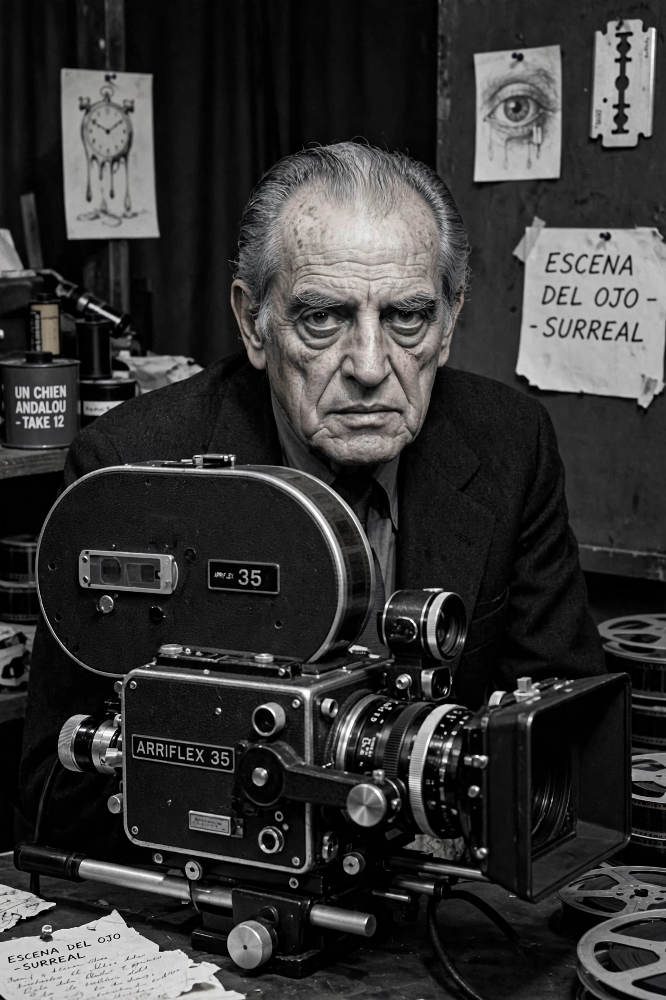

| Born | 22 February 1900, Calanda, Spain |
|---|---|
| Died | 29 July 1983 (aged 83), Mexico City, Mexico |
| Occupation | Film director |
| Years active | 1929–1977 |
Luis Buñuel Portolés (22 February 1900 – 29 July 1983) was a Spanish filmmaker, regarded as one of the greatest and most influential directors of all time. He worked in Spain, Mexico and France, and was a leading figure of surrealism in cinema.
With Salvador Dalí he made the short Un Chien Andalou (1929), famous for its eye-slitting opening, and L'Age d'Or (1930). After the Spanish Civil War he settled in Mexico, directing Los Olvidados (1950) and El (1953). Returning to Europe, he made Viridiana (1961), which won the Palme d'Or but was banned in Spain, Belle de Jour (1967), The Discreet Charm of the Bourgeoisie (1972), which won the Academy Award for Best Foreign Language Film, and That Obscure Object of Desire (1977).
His films combine dream logic, anticlerical satire, eroticism, and attacks on bourgeois morality, delivered with deadpan simplicity.